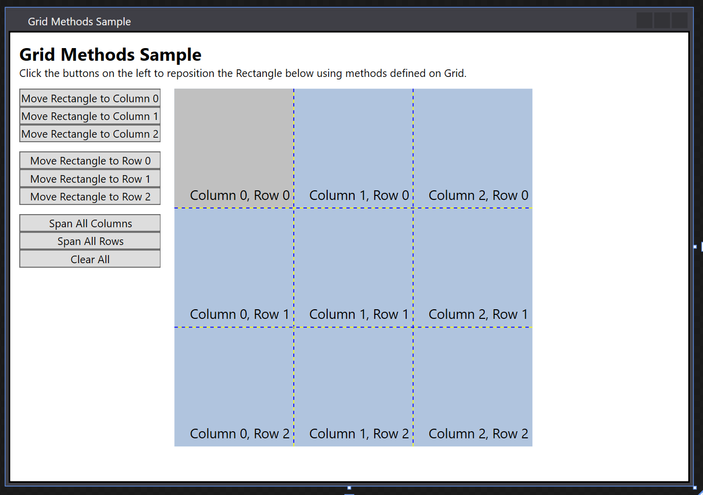

Практическое руководство. Размещение дочерних элементов сетки
В этом примере показано, как использовать команду get и задайте методы, определенные на Grid для размещения дочерних элементов.
Пример
В следующем примере определяется родительским Grid элемент (grid1) с тремя столбцами и тремя строками. Дочерний элемент Rectangle элемент (rect1) добавляется к Grid в столбец номер 0, строку номер 0. Button элементы представляют собой методы, которые могут быть вызваны для изменения положения Rectangle сервисном Grid. Когда пользователь нажимает кнопку, активируется связанный метод.
<Window
xmlns="http://schemas.microsoft.com/winfx/2006/xaml/presentation"
xmlns:x="http://schemas.microsoft.com/winfx/2006/xaml"
x:Class="grid_getset_methods.Window1"
Title="Grid Methods Sample">
<Border BorderBrush="Black" Background="White" BorderThickness="2">
<DockPanel VerticalAlignment="Top" HorizontalAlignment="Left" Margin="10">
<TextBlock FontSize="20" FontWeight="Bold" DockPanel.Dock="Top">Grid Methods Sample</TextBlock>
<TextBlock DockPanel.Dock="Top">Click the buttons on the left to reposition the Rectangle below using methods defined on Grid.</TextBlock>
<Grid Margin="0,10,15,0" DockPanel.Dock="Left">
<Grid.ColumnDefinitions>
<ColumnDefinition/>
<ColumnDefinition/>
</Grid.ColumnDefinitions>
<Grid.RowDefinitions>
<RowDefinition/>
</Grid.RowDefinitions>
<!-- <Snippet1> -->
<StackPanel Grid.Column="0" Grid.Row="0" HorizontalAlignment="Left" Orientation="Vertical">
<Button Click="setCol0">Move Rectangle to Column 0</Button>
<Button Click="setCol1">Move Rectangle to Column 1</Button>
<Button Click="setCol2" Margin="0,0,0,10">Move Rectangle to Column 2</Button>
<Button Click="setRow0">Move Rectangle to Row 0</Button>
<Button Click="setRow1">Move Rectangle to Row 1</Button>
<Button Click="setRow2" Margin="0,0,0,10">Move Rectangle to Row 2</Button>
<Button Click="setColspan">Span All Columns</Button>
<Button Click="setRowspan">Span All Rows</Button>
<Button Click="clearAll">Clear All</Button>
</StackPanel>
</Grid>
<Grid DockPanel.Dock="Top" Margin="0,10,15,0" HorizontalAlignment="Left" Name="grid1" ShowGridLines="True" Width="400" Height="400" Background="LightSteelBlue">
<Grid.ColumnDefinitions>
<ColumnDefinition/>
<ColumnDefinition/>
<ColumnDefinition/>
</Grid.ColumnDefinitions>
<Grid.RowDefinitions>
<RowDefinition/>
<RowDefinition/>
<RowDefinition/>
</Grid.RowDefinitions>
<Rectangle Name="rect1" Fill="Silver" Grid.Column="0" Grid.Row="0"/>
<TextBlock FontSize="15" HorizontalAlignment="Right" VerticalAlignment="Bottom" Grid.Column="0" Grid.Row="0" Margin="5">Column 0, Row 0</TextBlock>
<TextBlock FontSize="15" HorizontalAlignment="Right" VerticalAlignment="Bottom" Grid.Column="1" Grid.Row="0" Margin="5">Column 1, Row 0</TextBlock>
<TextBlock FontSize="15" HorizontalAlignment="Right" VerticalAlignment="Bottom" Grid.Column="2" Grid.Row="0" Margin="5">Column 2, Row 0</TextBlock>
<TextBlock FontSize="15" HorizontalAlignment="Right" VerticalAlignment="Bottom" Grid.Column="0" Grid.Row="1" Margin="5">Column 0, Row 1</TextBlock>
<TextBlock FontSize="15" HorizontalAlignment="Right" VerticalAlignment="Bottom" Grid.Column="1" Grid.Row="1" Margin="5">Column 1, Row 1</TextBlock>
<TextBlock FontSize="15" HorizontalAlignment="Right" VerticalAlignment="Bottom" Grid.Column="2" Grid.Row="1" Margin="5">Column 2, Row 1</TextBlock>
<TextBlock FontSize="15" HorizontalAlignment="Right" VerticalAlignment="Bottom" Grid.Column="0" Grid.Row="2" Margin="5">Column 0, Row 2</TextBlock>
<TextBlock FontSize="15" HorizontalAlignment="Right" VerticalAlignment="Bottom" Grid.Column="1" Grid.Row="2" Margin="5">Column 1, Row 2</TextBlock>
<TextBlock FontSize="15" HorizontalAlignment="Right" VerticalAlignment="Bottom" Grid.Column="2" Grid.Row="2" Margin="5">Column 2, Row 2</TextBlock>
</Grid>
<!-- </Snippet1> -->
<TextBlock DockPanel.Dock="Top" Name="txt1"/>
<TextBlock DockPanel.Dock="Top" Name="txt2"/>
<TextBlock DockPanel.Dock="Top" Name="txt3"/>
<TextBlock DockPanel.Dock="Top" Name="txt4"/>
</DockPanel>
</Border>
</Window>
В следующем примере кода программной части обрабатывает методы, кнопки Click вызывают события. Пример записывает эти вызовы методов в TextBlock элементы, которые используют связанные методы получения для вывода новых значений свойств в виде строк.
private void setCol0(object sender, RoutedEventArgs e)
{
Grid.SetColumn(rect1, 0);
txt1.Text = "Rectangle is in Column " + Grid.GetColumn(rect1).ToString();
}
private void setCol1(object sender, RoutedEventArgs e)
{
Grid.SetColumn(rect1, 1);
txt1.Text = "Rectangle is in Column " + Grid.GetColumn(rect1).ToString();
}
private void setCol2(object sender, RoutedEventArgs e)
{
Grid.SetColumn(rect1, 2);
txt1.Text = "Rectangle is in Column " + Grid.GetColumn(rect1).ToString();
}
private void setRow0(object sender, RoutedEventArgs e)
{
Grid.SetRow(rect1, 0);
txt2.Text = "Rectangle is in Row " + Grid.GetRow(rect1).ToString();
}
private void setRow1(object sender, RoutedEventArgs e)
{
Grid.SetRow(rect1, 1);
txt2.Text = "Rectangle is in Row " + Grid.GetRow(rect1).ToString();
}
private void setRow2(object sender, RoutedEventArgs e)
{
Grid.SetRow(rect1, 2);
txt2.Text = "Rectangle is in Row " + Grid.GetRow(rect1).ToString();
}
private void setColspan(object sender, RoutedEventArgs e)
{
Grid.SetColumnSpan(rect1, 3);
txt3.Text = "ColumnSpan is set to " + Grid.GetColumnSpan(rect1).ToString();
}
private void setRowspan(object sender, RoutedEventArgs e)
{
Grid.SetRowSpan(rect1, 3);
txt4.Text = "RowSpan is set to " + Grid.GetRowSpan(rect1).ToString();
}
Warning
It looks like the sample you are looking for does not exist.
Ниже приведен результат!
